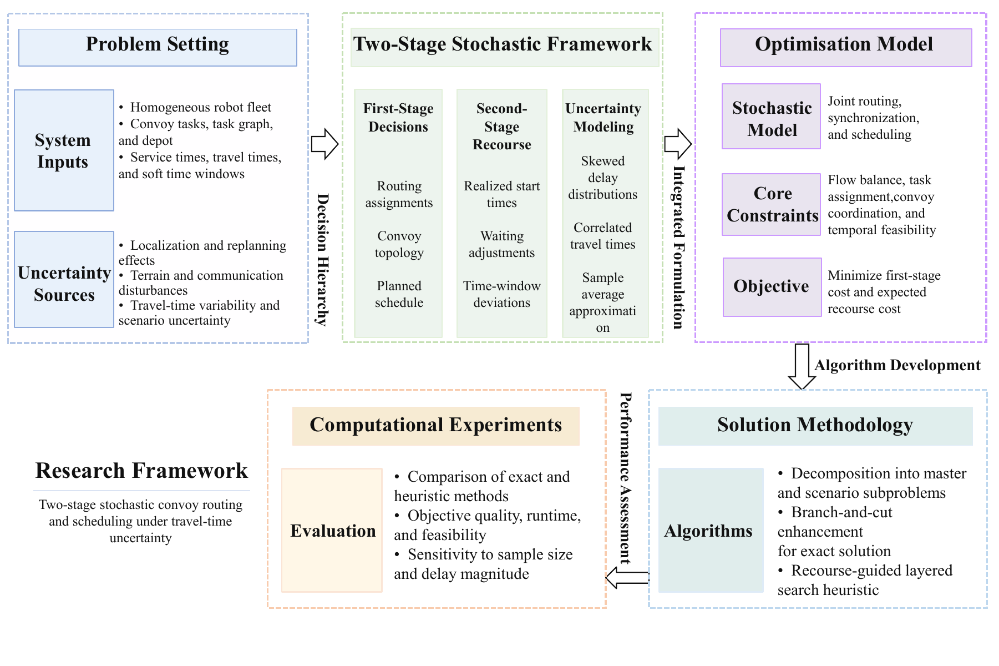
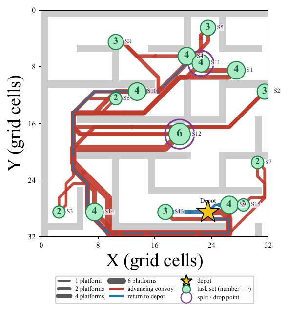
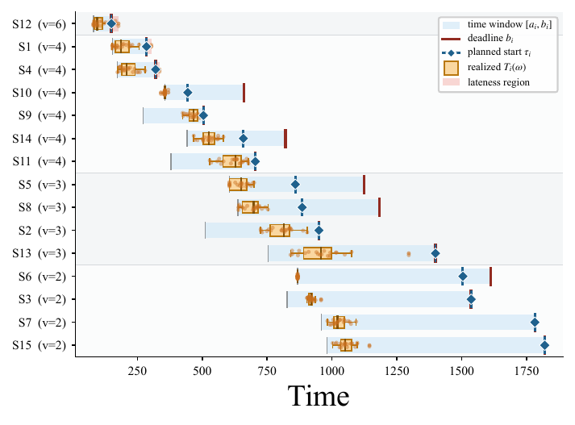
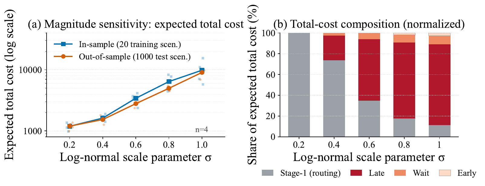
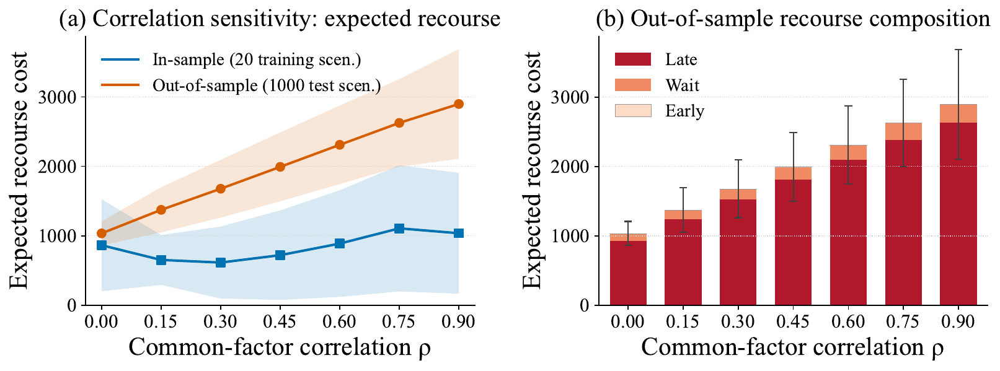

IEEE Transactions on Automation Science and Engineering, 2026
Multi-robot systems · Robot coordination · Mission planning · Logistics automation · Robust planning
Robust Convoy Routes Under Travel-Time Uncertainty.
A two-stage stochastic framework that commits routing, convoy topology, and nominal schedules before delays are observed — then resolves realized timing through scenario-dependent recourse.
Outdoor convoy operation. Synchronized movement in uncertain terrain, where travel-time perturbations propagate through the formation.
Indoor logistics operation. Coordinated task service by a homogeneous robotic fleet in a structured warehouse environment.
We develop S-VRPMS-CC, a two-stage stochastic extension of the Vehicle Routing Problem with Multiple Synchronizations–Convoy Constraints (VRPMS-CC). Routing assignments, convoy-flow topology, and the nominal schedule are committed as first-stage decisions; realized start times, waiting, and soft time-window violations are resolved as recourse. Two solvers are proposed: an exact branch-and-Benders-cut procedure and a Recourse-Guided Layered Search (RGLS) with closed-form second-stage evaluation.
Multi-robot systems are increasingly deployed in logistics, surveillance, and defense for missions demanding coordinated fleet effort. Convoy operations place the strictest demands on such coordination: a homogeneous group must rendezvous at distributed tasks, traverse shared edges as a synchronized formation, and maintain close proximity throughout each service. A single delay, from localization drift, reactive replanning, or terrain variability, propagates instantly across the formation and cascades to every downstream operation, rendering nominal-time schedules brittle in practice.
This paper develops the S-VRPMS-CC, a two-stage stochastic extension of the deterministic VRPMS-CC. Routing assignments, convoy-flow topology, and the nominal schedule are committed as first-stage decisions; realized start times, waiting, and soft time-window violations are resolved as recourse, with delays modeled as correlated multiplicative perturbations and the expected recourse approximated via Sample Average Approximation (SAA). Two methods are proposed: an exact branch-and-Benders-cut procedure exploiting the block-angular recourse structure, and a Recourse-Guided Layered Search (RGLS) evaluating each candidate via closed-form recovery of the exact second-stage optimum over compact chain and arborescence encodings.
On synthetic and MAPF benchmark instances, RGLS reproduces the reference objective on the random test bed, stays within 0.80% of the best benchmark incumbent on average, reduces mean wall-clock time by roughly two orders of magnitude, and returns feasible solutions where exact methods fail. These results demonstrate that high-quality, uncertainty-aware convoy plans can be generated within seconds for small and medium fleets and within two minutes at the largest scales tested, making the framework practical for real-world fleet deployment under tight operational timelines.
In convoy operations, a delay affecting any one platform propagates immediately to the entire formation, since all members must arrive and depart together. Such delays are routine in practice; congestion, sensor drift, and terrain variability regularly push travel times beyond planned values, rendering schedules optimized under ideal conditions brittle under real-world disruptions.
The framework developed here gives mission designers a tool for generating convoy routes and schedules robust to expected travel-time variability. Required inputs are a travel-time matrix, fleet size, a task list with service windows, and a statistical characterization of delay variability — typically available from deployment logs or platform specifications; the output is a complete mission plan specifying routing, convoy formation, and timetable.
A key operational advantage is computational efficiency at deployment scale: the algorithm returns high-quality plans within seconds for small and medium fleets and within tens of seconds to under two minutes for fleets of up to thirty robots, supporting both pre-mission scheduling and rapid replanning.

Proposed research framework. First-stage decisions commit routing, convoy topology, and nominal schedule before travel times are observed; second-stage recourse resolves realized timing, waiting, and soft time-window violations under sampled delay scenarios.
Branch-and-Benders-cut. The recourse problem decouples across scenarios once first-stage decisions are fixed. A master problem handles routing and convoy topology while scenario-wise subproblems inject optimality cuts via a lazy-constraint callback, exploiting the block-angular structure of the extensive form.
Recourse-Guided Layered Search (RGLS). A metaheuristic that searches compact chain and arborescence encodings absorbing convoy topology by construction. Every candidate is scored by closed-form recovery of the exact second-stage optimum. The search proceeds in two phases: a chain phase with adaptive destroy-and-repair intensified by variable-neighbourhood descent, followed by arborescence refinement that lifts the best chain to general branching topologies.
0.80%
Mean gap vs. benchmark incumbent
~100×
Faster than exact solvers on average
< 2 min
Feasible plans for 30-robot fleets
We evaluate three solvers — Gurobi (monolithic extensive form), branch-and-Benders-cut, and RGLS — on synthetic instances at small, medium, and large scales, plus five MAPF benchmark maps from movingai.com. Travel-time delays follow a lognormal multiplicative model with environmental correlation ρ = 0.3.
Key findings: On medium-scale random instances, RGLS reproduces the exact optimum on all five seeds roughly two orders of magnitude faster than Gurobi. On large-scale instances, both exact methods fail to return feasible incumbents on multiple seeds, whereas RGLS finds feasible solutions on all five in under two minutes. Aggregated over instances where Gurobi returns an incumbent, RGLS attains a mean relative gap of 0.80% on benchmark maps, with mean wall-clock time falling from 497.7 s to 4.5 s on random instances and from 967.4 s to 3.9 s on benchmark maps.
| Instance | |K| | |ST| | Gurobi | Benders | RGLS | |||
|---|---|---|---|---|---|---|---|---|
| Obj. | Time | Obj. | Time | Obj. | Time | |||
| Random — medium | ||||||||
| M_01 | 5 | 17 | 4567.37 | 477.4 | 4801.05 | 3600.7 | 4567.37 | 5.3 |
| M_05 | 5 | 13 | 1867.08 | 431.7 | 2021.20 | 3601.0 | 1867.08 | 4.9 |
| Random — large | ||||||||
| L_01 | 10 | 82 | 9822.74 | 3601.4 | 9840.57 | 3619.4 | 9822.74 | 14.5 |
| L_05 | 30 | 676 | — | 3600.2 | — | 3603.3 | 36413.69 | 107.6 |
| MAPF benchmarks | ||||||||
| B_01 (Berlin) | 5 | 24 | 5463.02 | 107.3 | 5463.02 | 270.5 | 5463.02 | 3.2 |
| B_05 (maze-32-32-4) | 6 | 50 | — | 3600.3 | — | 3600.1 | 1692.06 | 7.8 |
On benchmark instance B_05 (maze-32-32-4), where neither exact method returns a feasible
incumbent within the time limit, RGLS finds a complete convoy plan. A trunk of six platforms departs the
depot, sheds sub-convoys at split points as support contracts along the spine, and depleted groups return
independently along shortest grid paths.

(a) Convoy routing. Committed convoy routing on the occupancy grid; trunk width reflects the number of platforms carried.

(b) Schedule. Late-as-possible nominal schedule against realized start times over the scenario sample.
The value of the stochastic solution (VSS) is positive on every small and medium instance, averaging 20.35% of the recourse problem (RP) objective — a schedule laid out for mean travel times retains no temporal margin, so realized delays cause the convoy to accumulate waiting and time-window violations across the entire formation. The expected value of perfect information (EVPI) is also positive throughout, quantifying the cost that would be eliminated if travel times were known before first-stage decisions.
| Instance | |ST| | RP | EEV | WS | VSS (%) | EVPI (%) |
|---|---|---|---|---|---|---|
| Small (|K| = 3) | ||||||
| S_01 | 7 | 670.08 | 771.19 | 625.97 | 15.09 | 6.58 |
| S_04 | 9 | 1144.90 | 1274.19 | 672.04 | 11.29 | 41.30 |
| Medium (|K| = 5) | ||||||
| M_01 | 17 | 4567.37 | 5172.80 | 4354.23 | 13.26 | 4.67 |
| M_05 | 13 | 1867.08 | 2434.43 | 1810.78 | 30.39 | 3.02 |
First-stage routing and convoy topology remain structurally invariant across tested ranges of delay magnitude (σ) and environmental correlation (ρ); the model's response to uncertainty concentrates in second-stage recourse, dominated by the lateness penalty in every regime.

Delay magnitude (σ). Expected total cost grows super-linearly as σ rises; recourse share climbs to roughly two thirds at the baseline σ = 0.6.

Environmental correlation (ρ). Out-of-sample expected recourse rises roughly threefold from independent delays to ρ = 0.9, as joint slow-edge realizations propagate synchronized slippage through the convoy.
@article{anonymous2026svrpmscc,
author = {Anonymous Authors},
title = {Uncertainty-Aware Multi-Robot Convoy Planning via Two-Stage Stochastic Optimization},
journal = {IEEE Transactions on Automation Science and Engineering},
year = {2026},
}